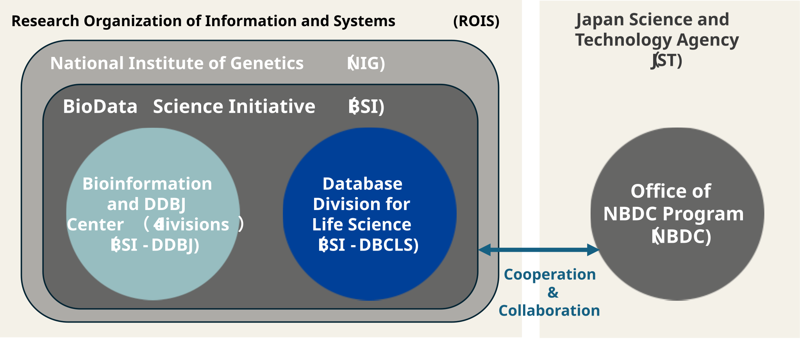

About DBCLS

Database Division for Life Science (DBCLS) was established in April 2007 at Research Organization of Information and Systems (ROIS) and in 2026, it became a division of National Institute of Genetics (NIG). We have been developing new technologies, services and standards for integrating biological databases, which include those developed and maintained in Japan as well as world-renowned databases.
We have long collaborated with Bioinformation and DDBJ Center (DDBJ) at NIG, also belonging to ROIS, on initiatives such as the development of core technologies for the integration and reuse of nucleotide sequence and gene expression data, as well as the development of tools for annotating nucleotide sequence data. Starting in 2026, both centers were transferred to the BioData Science Initiative (BSI), established in NIG. As a research hub promoting life science data science, the BSI aims to provide a high-value bio-data infrastructure to researchers both in Japan and abroad by comprehensively leveraging the data, technologies, and services possessed by DBCLS and DDBJ.
As part of the Life Science Database Integration Project, DBCLS has collaborated with the Office of NBDC Program (NBDC) of the Japan Science and Technology Agency (JST) through joint research and commissioned research. DBCLS has been responsible for developing core technologies related to the integration and preservation of databases under the NBDC’s initiatives. Starting in 2025, under the National Life Science Database Project (NLDP), funded by the Ministry of Education, Culture, Sports, Science and Technology (MEXT) , DBCLS has been addressing various challenges related to database integration in the age of AI.